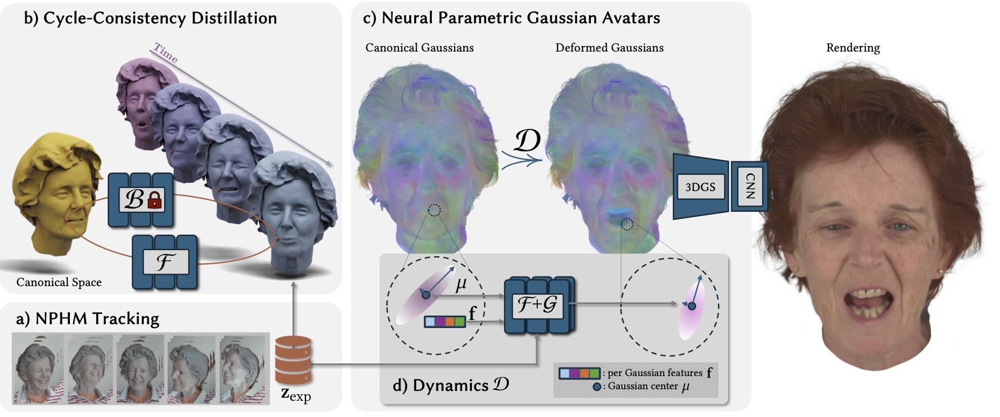

Self-Reenactment Results of NPGA.
Left: held-out sequence; Right: Self-Reenactment.
Abstract
The creation of high-fidelity, digital versions of human heads is an important stepping stone in the process of further integrating virtual components into our everyday lives. Constructing such avatars is a challenging research problem, due to a high demand for photo-realism and real-time rendering performance. In this work, we propose Neural Parametric Gaussian Avatars (NPGA), a data-driven approach to create high-fidelity, controllable avatars from multi-view video recordings. We build our method around 3D Gaussian splatting for its highly efficient rendering and to inherit the topological flexibility of point clouds. In contrast to previous work, we condition our avatars' dynamics on the rich expression space of neural parametric head models (NPHM), instead of mesh-based 3DMMs. To this end, we distill the backward deformation field of our underlying NPHM into forward deformations which are compatible with rasterization-based rendering. All remaining fine-scale, expression-dependent details are learned from the multi-view videos. To increase the representational capacity of our avatars, we augment the canonical Gaussian point cloud using per-primitive latent features which govern its dynamic behavior. To regularize this increased dynamic expressivity, we propose Laplacian terms on the latent features and predicted dynamics. We evaluate our method on the public NeRSemble dataset, demonstrating that NPGA significantly outperforms the previous state-of-the-art avatars on the self-reenactment task by ~2.6PSNR. Furthermore, we demonstrate accurate animation capabilities from real-world monocular videos.
Video
Latent Expression Interpolation
Here is an interactive viewer allowing for latent expression interpolation. Drag the blue cursor around to linearly interpolate between four different driving expressions. Two animated avatars are displayed on the right.
(Quadrilateral linear interpolation between 4 cornering expressions.)

Cross-Reenactments.
Tracked expression codes from the multi-view video (left) are transferred to NPGAs on the right.
Real-World Application.
Tracked expression codes from the monocular RGB video (left) are transferred to NPGAs on the right.
Method Overview
a) Our method is based on the MonoNPHM model. We track MonoNPHM against COLMAP point clouds computed on the NeRSemble dataset, which results in geometrically accurate model-based trackings.
b) We propose a cycle-consistency objective to invert MonoNPHM's backward deformation field. The resulting forward deformation field is directly compatible with rasterization-based rendering.
c) NPGAs consist of canonical Gaussian point cloud, which is forward warped using the distilled deformation prior F and second network G, responsible for learning fine-scale dynamic details.
d) By attaching latent features to each primitive, we lift the input to the deformation fields to a higher dimensional space, such that each primitive's dyanmic behaviour can be more accurately described.
Related Links
More Gaussian Avatars:
GHA also uses a learned MLP and GaussianAvatars binds Gaussians to an undeerlying FLAME mesh.
MVP proposes a uv-space 2D CNN to generate volumetric radiance information in an amortized fashion.
Check out the NeRSemble Dataset.
For more work on NPHMs see:
The original NPHM paper, and an improved version MonoNPHM, which uses backward deformations fields, includes color and allows for monocular tracking.